28 problèmes, classés par importance (gravité × fréquence). Pour chacun : symptôme, preuve, cause dans le code, impact, options, choix, spécification prête à coder (fichier:ligne, avant → après), critères d'acceptation, et la règle qui fonde la reco. Les numéros de ligne sont ceux de la branche recos-design au 8 novembre 2026.
Sources citées. Apple Human Interface Guidelines (HIG), pages Accessibility, Color, Typography, Keyboards, The menu bar, Notifications, Alerts, Loading, Writing, SF Symbols, Settings, Toggles. WCAG 2.2 (W3C). APCA-W3 0.0.98G-4g, seuils « Bronze simple ». Conventions observées dans les apps d'Apple livrées avec macOS 15 et 26 : Notes, Mail, Dictaphone, Calendrier, Finder, Réglages Système, QuickTime Player. Les règles internes : DESIGN.md, TEXTES.md, MANIFESTE.md.
Gravité : Gêne on se trompe, on hésite, on ne peut pas ; Détail ça se voit sans bloquer. Effort estimé pour un développeur qui connaît le code, tests et captures compris.
1. Textes à lire en gris tertiaire, et voix de réunion illisibles
Gêne3 hFonction · accessibilitéLot A
Symptôme
Dans une transcription, l'heure d'une réplique qui suit la même voix est à peine visible. Dans une réunion en salle, le numéro de la voix 1 (vert) ou 4 (sarcelle) se distingue mal de son rond. En sombre, le rouge « En cours » d'une ligne choisie et le bleu de « Moi » dans son rond faiblissent.
Preuve
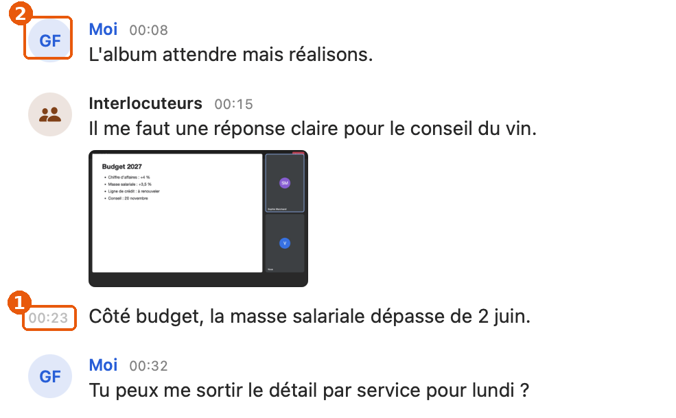
① « 00:23 » : #C6C6C6 sur blanc, 1,88:1, APCA Lc 36 (prélevé dans nouvelle.webp). ② Initiales de « Moi » : 4,56:1 en clair, 4,37:1 en sombre.
Texte
Fond
Mode
Taille
WCAG
APCA
Heure d'une réplique de suite (.caption2, .tertiary)
détail
clair
10
1,88:1
35,6
idem
détail
sombre
10
2,27:1
−14,7
Numéro de la voix 1 (vert système)
rond vert 14 %
clair
13 gras
1,98:1
35,4
Numéro de la voix 4 (sarcelle)
rond 14 %
clair
13 gras
2,27:1
41,3
Numéro de la voix 3 (rose)
rond 14 %
clair
13 gras
3,00:1
49,0
Numéro de la voix 2 (violet)
rond 24 %
sombre
13 gras
3,44:1
−32,8
Numéro de la voix 5 (indigo)
rond 24 %
sombre
13 gras
2,60:1
−22,0
« ● En cours » (Palette.live)
ligne choisie
sombre
12
3,00:1
−31,5
Initiales de « Moi »
rond bleu 24 %
sombre
12 gras
4,37:1
−44,7
Tous les couples : Mesures, donnees/contraste_code.csv, donnees/contraste_captures.csv.
Cause
TranscriptReader.swift:1215-1216 : .font(.caption2.monospacedDigit()) + .foregroundStyle(… : AnyShapeStyle(.tertiary)) pour une information à lire (le moment où la phrase est dite, cliquable). TranscriptReader.swift:1313 : voices = [.green, .purple, .pink, .teal, .indigo], les couleurs du système, faites pour des surfaces et des icônes, pas pour du texte sur leur propre teinte (:1321, tint.opacity(0.14 / 0.24)). Accessibility.swift:47 : Palette.live reprend .systemRed en sombre ; posé sur Chosen.fill il perd 1,2 point de ratio. TranscriptReader.swift:1171-1175 : me sombre #5EA8FF, calibré sur fond nu, pas sur son rond.
Impact
L'heure de suite apparaît sur chaque réplique qui suit la même voix sans silence de 15 s (TranscriptReader.swift:1100) : dans un monologue, une présentation, une note dictée, c'est la majorité des lignes. Les numéros de voix : chaque réunion en salle, la voix 1 toujours présente. Les personnes concernées : basse vision, écran au soleil, projecteur, mode sombre.
Règle
WCAG 2.2, 1.4.3 Contraste (minimum), AA : 4,5:1. HIG, Accessibility › Color and effects : « Strive for a minimum contrast ratio of 4.5:1 » pour le texte jusqu'à 17 pt. HIG, Color : les couleurs système varient avec le mode et le contraste, il faut vérifier le texte qui les porte. APCA Bronze : Lc 60 au moins pour un texte de contenu, 75 sous 12 px. DESIGN.md s'y engage déjà pour Palette (« 4,5:1 en petit sur fond clair »).
Options
A. Garder la forme, corriger les valeurs (choisie)
Heure de suite : .caption (10 → 10, mais .secondary) — 3,95:1 / Lc 67. Reste sous 4,5 comme tout le gris secondaire de macOS (voir Mesures), mais au niveau des apps d'Apple et 2,1× plus lisible.
Voix : des teintes adaptatives calculées pour tenir 4,5:1 et Lc 60 sur leur rond (donnees/teintes_proposees.csv).
« ● En cours » sur une ligne choisie : le point reste rouge (élément non textuel, 3:1), le texte passe en .primary.
Pour : aucune mise en page ne bouge ; les teintes restent reconnaissables. Contre : six couleurs de plus à maintenir (dans Palette, une seule valeur par rôle).
B. Retirer la couleur du texte
Numéros en .primary sur le rond teinté.
Pour : contraste garanti, zéro valeur. Contre : on perd « suivre qui parle d'un coup d'œil », la raison des teintes (commentaire :1318).
C. Masquer l'heure de suite
Pour : moins de bruit. Contre : l'heure est la cible du clic pour réécouter ; la retirer enlève une fonction.
Spécification
TranscriptReader.swift:1215-1216
avant .font(.caption2.monospacedDigit())
.foregroundStyle(playing ? AnyShapeStyle(Color.accentColor) : AnyShapeStyle(.tertiary))
après .font(.caption.monospacedDigit())
.foregroundStyle(playing ? AnyShapeStyle(Color.accentColor) : AnyShapeStyle(.secondary))
TranscriptReader.swift:1313
avant private static let voices: [Color] = [.green, .purple, .pink, .teal, .indigo]
après private static let voices: [Color] = Palette.voices // nouveau, dans Accessibility.swift
Accessibility.swift (dans enum Palette, après success)
+ static let voices: [Color] = [
+ adaptive(light: (0x1F, 0x77, 0x35), lightContrast: (0x18, 0x60, 0x2A), dark: rgb(0x65, 0xDD, 0x82)), // vert
+ adaptive(light: (0x9C, 0x29, 0xD6), lightContrast: (0x80, 0x1F, 0xB0), dark: rgb(0xE3, 0xB6, 0xF9)), // violet
+ adaptive(light: (0xC7, 0x00, 0x26), lightContrast: (0xA3, 0x00, 0x1F), dark: rgb(0xFF, 0xB0, 0xC0)), // rose
+ adaptive(light: (0x1F, 0x72, 0x81), lightContrast: (0x18, 0x5D, 0x69), dark: rgb(0x6A, 0xD4, 0xE7)), // sarcelle
+ adaptive(light: (0x58, 0x56, 0xD6), lightContrast: (0x45, 0x43, 0xB0), dark: rgb(0xC2, 0xC1, 0xF6)), // indigo
+ ]
(adaptive accepte aujourd'hui un NSColor pour le sombre : ajouter la variante rgb, ou passer NSColor(srgbRed:…))
TranscriptReader.swift:1171-1175 (me, sombre)
avant NSColor(srgbRed: 0x5E / 255, green: 0xA8 / 255, blue: 1, alpha: 1)
après NSColor(srgbRed: 0x9C / 255, green: 0xC9 / 255, blue: 1, alpha: 1) // 5,5:1 et Lc 60 sur son rond
(le nom « Moi » sur fond nu passe de 6,76:1 à 10,4:1 ; vérifier qu'il reste distinct de l'accent)
CallCard.swift:211-214 (ligne en cours)
avant Text(time + "● En cours · " + CLI.duration(m.duration)).foregroundStyle(Palette.live)
après (Text(time) + Text("● ").foregroundColor(Palette.live) + Text("En cours · " + CLI.duration(m.duration)))
.foregroundStyle(selected ? .primary : Palette.live)
Critères d'acceptation
python3 design/recos/ux-mac/outils/mesures.py, après mise à jour des valeurs dans USES : aucun couple « voix » ni « heure de suite » sous 4,5:1 ; heure de suite ≥ 3,9:1 (niveau du gris système).
Capture d'une réunion à cinq voix, clair et sombre : chaque numéro lisible à 100 % de zoom, teintes toujours distinctes deux à deux (écart ΔE2000 ≥ 15 entre deux voix).
Avec Réglages Système › Accessibilité › Affichage › Augmenter le contraste : les variantes lightContrast sont prises (capture).
Ligne en cours choisie, en sombre : texte ≥ 4,5:1, point rouge visible.
2. Pas de ⌘N : le menu Fichier ne sait rien créer
Gêne2 hFamiliaritéLot B
Symptôme
⌘N ne fait rien. Pour lancer une réunion, il faut viser une ligne du pied de colonne ; pour dicter une note dans la fenêtre, il faut aller sur la page Notes et cliquer le « + ». Aucune commande n'arrête l'enregistrement au clavier.
Preuve
MainMenu.swift:35-46 : Fichier = Ouvrir dans une nouvelle fenêtre, Afficher dans le Finder, Exporter la transcription, Fermer. Recherche de key: "n" dans tout Sources/CallRecorder : 0 résultat. Dans donnees/raccourcis_conventions.csv, 4 commandes de création ou d'arrêt sans raccourci.
Cause
Les actions existent dans le modèle (CallsModel.swift:130-134 : startMeeting, startNote, stopRecording) mais MainMenu ne les expose pas ; le menu de l'icône les montre sans raccourci (App.swift:874-875).
Impact
Toute personne qui veut démarrer une réunion depuis le clavier ; chaque réunion qui commence pendant qu'on tape. VoiceOver et Contrôle total du clavier trouvent les commandes par les menus : ce qui n'y est pas leur est plus lointain.
Règle
HIG, Keyboards › Standard keyboard shortcuts : ⌘N « New ». HIG, The menu bar › File menu : les commandes de création en tête. Observé : Dictaphone (Fichier › Nouvel enregistrement ⌘N, qui devient le bouton d'arrêt pendant l'enregistrement), Notes (Fichier › Nouvelle note ⌘N), QuickTime Player (Fichier › Nouvel enregistrement audio ⌥⌘N).
Options
A. Fichier › Enregistrer une réunion ⌘N, Nouvelle note ⇧⌘N (choisie)
⌘N bascule en « Arrêter l'enregistrement » pendant un enregistrement, comme Dictaphone.
Pour : l'action principale de l'app au raccourci le plus connu. Contre : ⌘N ne crée pas « une conversation » au sens large ; mais une réunion est la seule conversation qu'on lance à la main.
B. ⌘N = Nouvelle note, ⌥⌘N = Enregistrer une réunion (comme QuickTime)
Pour : la note est l'objet « créé » le plus proche de Notes. Contre : la réunion, plus fréquente et plus urgente, prend le raccourci le moins mémorisable.
C. Un menu « Enregistrement » à part
Pour : regroupe démarrer, capturer, arrêter. Contre : un menu de plus pour trois commandes ; Dictaphone s'en passe.
Spécification
MainMenu.swift:35 (en tête du sous-menu « Fichier »)
+ item("Enregistrer une réunion", key: "n",
+ when: { [unowned self] in calls.model.recording != nil || !calls.model.blocked },
+ title: { [unowned self] in calls.model.recording == nil ? "Enregistrer une réunion"
+ : calls.model.recording!.note ? "Terminer la note" : "Arrêter l'enregistrement" }) { [unowned self] in
+ calls.model.recording == nil ? calls.model.startMeeting() : calls.model.stopRecording()
+ },
+ item("Nouvelle note", key: "n", modifiers: [.command, .shift],
+ when: { [unowned self] in calls.model.recording == nil }) { [unowned self] in calls.model.startNote() },
+ .separator(),
App.swift:874-875 (menu de l'icône, au repos : montrer les mêmes raccourcis)
avant menu.addItem(item("Enregistrer une réunion", #selector(meetingClicked)))
après menu.addItem(item("Enregistrer une réunion", #selector(meetingClicked), key: "n"))
App.swift:861
avant menu.addItem(item(s.meta.app == Session.noteApp ? "Terminer la note" : "Arrêter", #selector(stopClicked)))
après menu.addItem(item(s.meta.app == Session.noteApp ? "Terminer la note" : "Arrêter l'enregistrement", #selector(stopClicked), key: "n"))
Critères d'acceptation
Fenêtre Conversations au premier plan, rien en cours : ⌘N lance une réunion ; la colonne montre « Arrêter l'enregistrement ».
⇧⌘N ouvre une note dictée ; éteint pendant un enregistrement.
Autorisations manquantes : l'article est éteint (pas d'enregistrement muet).
Dans un champ de texte, ⌘N n'est pas intercepté par le champ (vérifier la recherche).
3. « v1 · Transcription » : la version montrée au premier niveau
Gêne2 hSensLot C
Symptôme
Le plus large bouton de la barre flottante dit « v1 · Transcription », « v2 · Claude », « v3 · Whisper » ou « v2 · Modifiée ». Après une nouvelle transcription moins bonne, c'est elle qu'on lit, avec « v2 » pour seul indice.
Preuve
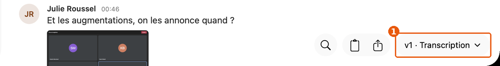
① dans lecture.webp, calendrier.webp, claudeia.webp, nouvelle.webp, encours.webp, repliee.webp, fenetre-transcription.webp : 7 captures sur 35.
Cause
TranscriptReader.swift:655-659 (versionLabel) écrit "v\(n) · \(v.kind)". Sources/CallCore/Transcripts.swift:109 : kind vaut « Modifiée », « Claude », « Whisper » (nom d'un modèle) ou « Transcription ». Dans la dev, Features.callFacts remplace ce bouton par « Détail » (:580-591) ; en prod l'interrupteur est coupé.
Impact
Chaque conversation transcrite ouverte, en prod. Le mot « Whisper » est un mot du code ; « Claude » seul ne dit pas ce que Claude a fait.
Règle
DESIGN.md, Principes : « Montrer le final… jamais la liste des versions ». TEXTES.md, principe 3 : « Le code a ses mots ». Observé : Pages, Numbers, TextEdit cachent les versions dans Fichier › Revenir à › Parcourir toutes les versions ; Notes n'en montre aucune.
Le libellé date de e623f52 (27 octobre, 0.6.0). 35b9624 (5 novembre) a commencé à le remplacer derrière callFacts. La reco va dans le sens de ce second commit.
Options
A. Dire ce qu'est le texte, sans numéro (choisie pour la prod), puis sortir callFacts
Bouton : « Transcription », « Relue par Claude », « Modifiée ». Le numéro et la date restent dans le menu.
Pour : immédiat, aucune fonction perdue. Contre : deux versions du même genre portent le même nom sur le bouton ; la date les sépare dans le menu.
B. Sortir callFacts tout de suite
Pour : c'est la cible. Contre : l'essai est encore dans sa période (ESSAIS.md) ; la décision appartient à l'échéance.
C. Ne rien afficher quand il n'y a qu'une version
Pour : le cas courant devient muet. Contre : le menu (Nouvelle transcription, Relire avec Claude, Afficher le contexte) disparaît avec.
Spécification
TranscriptReader.swift:655-659
avant return "v\(reader.number(v)) · \(v.kind)" + (v.url == reader.fresh ? " · nouvelle" : "")
après return Self.kindLabel(v) + (v.url == reader.fresh ? " · nouvelle" : "")
TranscriptReader.swift (nouveau, à côté)
+ static func kindLabel(_ v: TranscriptVersion) -> String {
+ v.byHand ? "Modifiée" : v.byClaude ? "Relue par Claude" : "Transcription" // jamais « Whisper »
+ }
TranscriptReader.swift:252 (lignes du menu : le numéro reste, avec le nom lisible)
avant "v\(number(v)) · \(v.kind)…"
après "\(TranscriptReaderView.kindLabel(v)) (\(number(v)))…"
TranscriptReader.swift:643 et :265
avant "Supprimer la transcription v\(reader.number(v))" / "Impossible de supprimer la transcription v\(number(v))"
après "Supprimer cette transcription" / "Impossible de supprimer cette transcription"
Critères d'acceptation
Aucune chaîne de la forme « v1 », « v2 » visible hors du menu des transcriptions (recherche "v\\(" dans Sources/CallRecorder : seulement :252).
« Whisper » n'apparaît dans aucun texte affiché (donnees/textes.csv régénéré).
Captures lecture, nouvelle, claudeia refaites : le bouton dit « Transcription » ou « Relue par Claude ».
4. Cinq boutons et deux objets muets pour VoiceOver
Gêne2 hFonction · accessibilitéLot A
Symptôme
Avec VoiceOver, le bouton Lire du lecteur, Capturer pendant un appel, le ⋯ d'un groupe, ⊖ d'une copie et × de la bulle du guide n'ont pas de nom donné par l'app. L'icône de la barre des menus s'annonce « Au repos ». La pastille, qui dit qu'on est enregistré, ne dit rien.
Preuve
197 contrôles délimités par outils/boutons.py ; 24 à icône seule ; relus un à un : 5 sans accessibilityLabel (tableau dans Mesures) : TranscriptReader.swift:481 (PlayButton du lecteur, seulement .help), TranscriptReader.swift:1797, GroupsView.swift:387, Onboarding.swift:509, SettingsGuide.swift:105. Hors SwiftUI : App.swift:839, Pastille.swift:164-180.
Cause
L'habitude du code est bonne (42 accessibilityLabel, 115 .help) ; ces cinq cas reposent sur .help, qui devient l'aide d'accessibilité (lue après le libellé, et après un délai), pas le nom. Les vues AppKit de la pastille n'ont reçu aucun setAccessibility….
Impact
Bouton Lire : chaque conversation écoutée. Capturer : chaque appel où l'on veut garder une slide. Pastille : chaque enregistrement, et c'est la seule preuve à l'écran qu'on enregistre. Le libellé lu à la place dépend de la description que macOS donne au symbole : non vérifiable ici, à confirmer avec Accessibility Inspector.
Règle
HIG, Accessibility › VoiceOver : « Provide alternative labels for all key interface elements ». WCAG 2.2, 4.1.2 Nom, rôle et valeur (A). HIG, The menu bar › Menu bar extras : l'icône représente l'app. MANIFESTE.md : la personne doit pouvoir vérifier qu'elle est enregistrée.
Spécification
TranscriptReader.swift:481-485 (après .help)
+ .accessibilityLabel(playing ? "Pause" : passageTimes != nil ? "Écouter le passage surligné" : "Écouter l'enregistrement")
TranscriptReader.swift:1797
+ .accessibilityLabel(meta.isRoom ? "Capturer la fenêtre" : "Capturer l'appel")
GroupsView.swift:387 (Menu ⋯)
+ .accessibilityLabel("Actions sur le groupe \(g.title)")
Onboarding.swift:509
+ .accessibilityLabel("Arrêter cette copie")
SettingsGuide.swift:105
+ .accessibilityLabel("Fermer")
App.swift:839
avant accessibilityDescription: recording ? "Enregistrement" : "Au repos"
après accessibilityDescription: recording ? "Callrecorder, \(recordingLabel(session!).lowercased())" : "Callrecorder"
(et mettre à jour la description dans tick(), chaque minute : « …, 12 minutes »)
Pastille.swift, dans build() (vers :164-180)
+ panel.setAccessibilityTitle("Enregistrement en cours")
+ dot.setAccessibilityElement(false)
+ time.setAccessibilityLabel(label) // « Enregistrement de Teams, 12 minutes », passé par show()/tick()
+ time.setAccessibilityRole(.staticText)
Critères d'acceptation
Accessibility Inspector (Xcode) : chacun des cinq boutons a un « Label » en français.
VoiceOver, ⌃⌥M puis navigation vers les icônes de la barre des menus : « Callrecorder » au repos ; « Callrecorder, enregistrement de Teams » pendant.
VoiceOver sur la pastille : « Enregistrement de Teams, 12 minutes » puis « Capturer l'appel, bouton », « Arrêter l'enregistrement, bouton ».
outils/boutons.py : 0 contrôle à icône seule sans accessibilityLabel hors faux positifs listés.
5. Supprimer un appel en cours, depuis la barre des menus, sans filet
Gêne4 hFonctionLot D
Symptôme
Pendant un appel, le menu de l'icône propose « Supprimer cet appel » deux lignes sous « Arrêter ». Un clic : l'enregistrement s'arrête et part à la corbeille, sans question. Le code dit « ⌘Z le remet », mais l'app est en arrière-plan à ce moment-là (on est dans Teams) : ⌘Z va à Teams.
Preuve
App.swift:868-871 (l'article), :787-796 (deleteClicked : stopSession puis CallTrash.trash, sans alerte ni notification). App.swift:974 : setActivationPolicy(.accessory) ; ouvrir le menu de l'icône n'active pas l'app.
Cause
Le chemin a été aligné sur celui de la fenêtre (INCOHERENCES.md, Gestes 2), où ⌘Z marche ; le contexte de la barre des menus, lui, n'a pas d'annulation.
Impact
Rare, mais irréversible là où on est, et au pire moment (en plein appel, menu ouvert à la hâte). La conversation reste dans Réglages › Récemment supprimés : encore faut-il le savoir.
Règle
HIG, Undo and redo : quand l'annulation n'est pas disponible, confirmer une action destructrice. HIG, Alerts : « Use an alert to confirm destructive actions » — mais une alerte volerait le premier plan à l'appel (ce que la pastille évite exprès, #79). HIG, Notifications › Actionable notifications. Observé : Mail montre « Annuler l'envoi » après l'envoi ; Photos garde « Récemment supprimés » et le dit.
Options
A. Une notification « Appel supprimé » avec « Remettre » (choisie)
Pour : n'interrompt pas l'appel ; l'annulation est là où on est. Contre : dépend de l'autorisation des notifications (sinon, pas de filet : garder alors B).
B. Une alerte de confirmation
Pour : standard, fiable. Contre : active l'app et vole le clavier pendant l'appel.
C. Retirer l'article du menu
Pour : plus de risque. Contre : supprimer un appel qu'on ne voulait pas garder, tout de suite, est une demande de confidentialité légitime (MANIFESTE.md).
Spécification
App.swift:787-796 (fin de deleteClicked)
+ Recorded.shared.trashed(m) { [weak self] in try? CallTrash.restore(self!.cfg, id: m.id); self?.callsWindow.model.reload() }
Recorded.swift (nouveau)
+ private static let trashedCategory = "trashed", restore = "restore"
+ func trashed(_ m: Meta, restore: @escaping () -> Void)
+ // UNNotificationCategory(identifier: "trashed", actions: [UNNotificationAction(identifier: "restore", title: "Remettre")])
+ // content.title = "Appel supprimé" (« Réunion supprimée », « Note supprimée » selon m)
+ // content.body = titre de la conversation + " · " + durée ; identifiant = m.id (remplace « Enregistré »)
+ // didReceive : action "restore" → restore()
+ Repli si les notifications sont refusées : NSAlert « Supprimer cet appel ? » / « Supprimer l'appel » / « Annuler ».
CallTrash.swift (nouveau)
+ static func restore(_ cfg: Config, id: String) throws // la même opération que l'annulation de register(), pour un seul id
Critères d'acceptation
Pendant un appel Teams au premier plan : Supprimer cet appel → Teams reste au premier plan ; une notification « Appel supprimé » apparaît avec « Remettre ».
« Remettre » : la conversation revient dans la liste, à sa place et dans son groupe, avec son audio.
Notifications refusées : une alerte demande confirmation.
6. Huit cibles sous 24 pt
Gêne3 hFonction · accessibilitéLot A
Symptôme
Le chevron qui replie un groupe, le haut-parleur qui coupe une piste, le × de la bulle du guide, le compteur de notes, l'icône Capturer, le ⊖ d'une copie, l'interrupteur des groupes et les boutons .mini sont petits à viser.
Preuve
donnees/cibles.csv : 18 cibles dessinées à la main ; 12 sous 28 pt (défaut HIG), 8 sous 24 pt (WCAG 2.5.8), 3 sous 20 pt (minimum HIG). Deux vérifiées en pixels : bouton Lire 30×30 pt, interrupteur .mini 36×16 pt.
Cause
GroupsView.swift:399 22×22 ; TranscriptReader.swift:533 22×22 ; SettingsGuide.swift:105 22×22 ; NotesPane.swift:190 20×20 ; TranscriptReader.swift:1797 icône sans cadre ; Onboarding.swift:509.borderless 16 pt ; GroupsView.swift:375.controlSize(.mini) ; TranscriptReader.swift:582, :597.mini. MoreButton.size = 24 (Style.swift:62), juste au seuil WCAG, sous le défaut HIG.
Impact
Tremblement, trackpad, Contrôle du pointeur, souris tête : chaque geste fin. Le ⋯ (24 pt) est sur chaque ligne survolée.
Règle
HIG, Accessibility, tableau des tailles de contrôle : macOS 28×28 pt par défaut, 20×20 pt minimum. WCAG 2.2, 2.5.8 Target Size (Minimum), AA : 24×24 px. Observé : Mail et Notes, boutons de barre d'outils 28 pt de haut ; Réglages Système, interrupteurs .small au plus petit.
Options
A. Agrandir la zone, pas le dessin (choisie)
.frame(width: 28, height: 28).contentShape(…) autour d'icônes inchangées ; MoreButton.size 24 → 28 en zone, 24 en rond de survol.
Pour : rien ne bouge à l'œil. Contre : les zones voisines doivent rester séparées (vérifier le chevron et le ⋯ du groupe, 8 pt d'écart).
B. Agrandir les icônes
Pour : visible. Contre : alourdit des lignes que DESIGN.md veut légères.
Spécification
Style.swift:62 MoreButton.size 24 → 28 (+ static let plate: CGFloat = 24, pour le rond de survol)
GroupsView.swift:399 .frame(width: 22, height: 22) → .frame(width: 28, height: 28)
TranscriptReader.swift:533 .frame(width: 22, height: 22) → .frame(width: 28, height: 24) // pas plus haut que la rangée de l'onde
SettingsGuide.swift:105 .frame(width: 22, height: 22) → .frame(width: 28, height: 28)
NotesPane.swift:190 .frame(width: 20, height: 20) → .frame(minWidth: 28, minHeight: 24)
TranscriptReader.swift:1797 label: { Image(systemName: "camera.viewfinder").frame(width: 28, height: 28) }
Onboarding.swift:509 Button { … } label: { Image(systemName: "minus.circle") }.buttonStyle(.borderless)
→ Button("Arrêter la copie", role: .destructive) { … }.controlSize(.small)
GroupsView.swift:375 .controlSize(.mini) → .controlSize(.small)
TranscriptReader.swift:582, :597 .controlSize(.mini) → .controlSize(.small)
Critères d'acceptation
donnees/cibles.csv régénéré : 0 cible sous 24 pt ; sous 28 pt, seulement celles dont le voisinage l'impose, listées avec leur raison.
Captures avant/après identiques à l'œil, hors interrupteur et boutons .small.
7. Le squelette de transcription pendant un enregistrement
Gêne2 hSensLot C
Symptôme
Un appel qui s'enregistre et une nouvelle transcription qui tourne montrent le même squelette gris qui respire. Pendant l'appel, la reconnaissance d'Apple affiche les phrases au fil de l'eau ; tant qu'elle n'a rien reconnu (silence, autre langue, salle bruyante), le squelette pulse sans fin.
Preuve
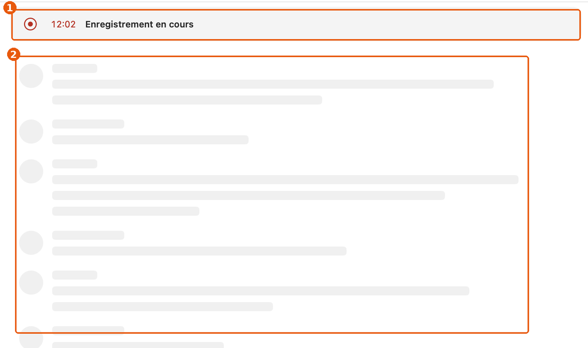
enregistrement.webp : ① la carte d'enregistrement (réduite sur la capture : le direct ne se photographie pas), ② le squelette.
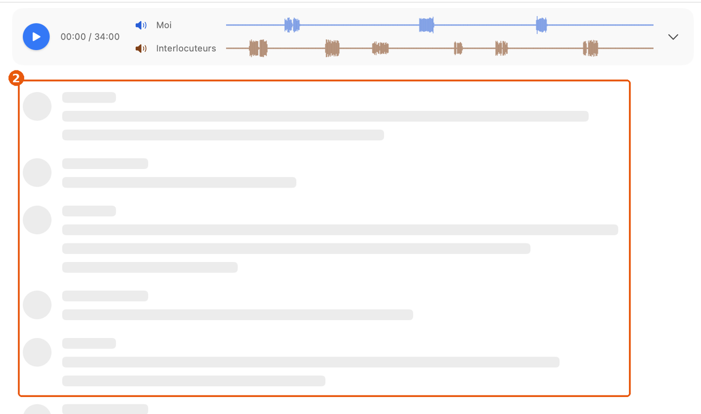
encours.webp : ② le même squelette, pour un tout autre état.
Cause
TranscriptReader.swift:1806-1808 : TranscriptSkeleton(duration:…) dans RecordingSkeleton, le même composant que :1706. Le texte juste existe déjà, inutilisé dans ce cas : TranscriptReader.swift:1438 « Transcription à la fin de l'enregistrement ».
Impact
Chaque enregistrement ouvert dans la fenêtre pendant qu'il tourne. Un squelette qui ne se remplit pas se lit comme une panne, au moment où l'on veut être sûr que tout marche.
Règle
HIG, Loading : un indicateur de chargement promet un contenu qui arrive ; « show content as soon as possible ». HIG, Progress indicators : un indicateur indéterminé dit qu'un travail est en cours. TEXTES.md, principe 4 : « L'état affiché est celui du moment ».
Corrige la reco 10 de la première liste (ux-mac.html) : elle disait que rien n'arrivait avant la fin. La reconnaissance en direct existe (commentaire TranscriptReader.swift:1750-1753) ; le défaut est le squelette qui dure, pas l'absence de direct.
Options
A. Une phrase calme tant que rien n'est reconnu (choisie)
« Les phrases reconnues s'affichent ici. » ; après 60 s sans rien : « Rien n'est reconnu pour l'instant. La transcription complète se fera à la fin. » Les jauges, au-dessus, montrent déjà que le son arrive.
Pour : vrai à chaque instant. Contre : un texte de plus (justifié : il change ce que la personne pense, principe 1).
B. Garder le squelette, l'arrêter après 30 s
Pour : rien à écrire. Contre : même signe que « transcription en cours » pendant 30 s.
Spécification
TranscriptReader.swift:1806-1808
avant if lines.lines.isEmpty && lines.shots.isEmpty {
TranscriptSkeleton(duration: max(meta.duration, Date().timeIntervalSince(meta.start), 120))
après if lines.lines.isEmpty && lines.shots.isEmpty {
TimelineView(.periodic(from: .now, by: 10)) { ctx in
let quiet = ctx.date.timeIntervalSince(meta.start) > 60
Text(quiet ? "Rien n'est reconnu pour l'instant. La transcription complète se fera à la fin."
: "Les phrases reconnues s'affichent ici.")
.foregroundStyle(.secondary).frame(maxWidth: .infinity).padding(.top, 40)
}
Critères d'acceptation
Pendant un enregistrement, avant la première phrase : pas de squelette ; la phrase est là.
Une nouvelle transcription en cours garde le squelette (encours.webp inchangée).
« Réduire les animations » : rien ne bouge (déjà vrai : texte fixe).
8. Le vocabulaire des Réglages : Paramètres, Base de données externe, Claude, CallRecorder
Gêne1 hSensLot B
Symptôme
« Réglages › Paramètres » empile deux synonymes. La page des copies s'appelle « Base de données externe », sa section « Copies », son bouton « Ajouter une copie… ». Les groupes disent « Accessible à Claude » pour un interrupteur qui vaut pour toutes les IA. Les menus disent « CallRecorder ».
Preuve
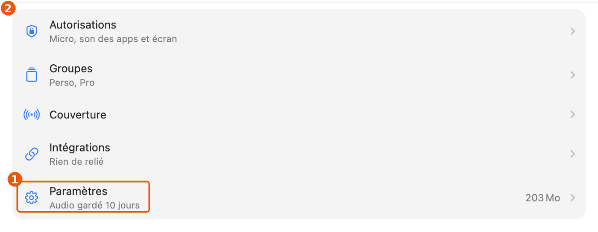
① « Paramètres » sous ② « Réglages ».
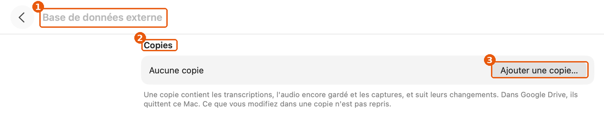
① titre « Base de données externe », ② section « Copies », ③ « Ajouter une copie… ».
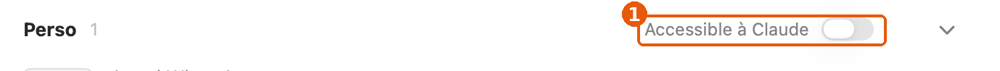
① « Accessible à Claude ». L'infobulle du même interrupteur dit « Ni Claude ni les agents ne lisent… » (GroupsView.swift:384).
Comptage dans les textes affichés (donnees/vocabulaire.csv) : « Claude » seul 50 fois, « agent(s) » 16, « IA » 9 ; « CallRecorder » 10 fois dans des textes, « Callrecorder » 13 ; « Réglages » 17, « Paramètres » 5.
Cause
Wizard.swift:79case .parameters: "Paramètres" ; Onboarding.swift:197. Wizard.swift:81case .online: "Base de données externe" ; Onboarding.swift:362. GroupsView.swift:312 (models = « Claude » ou « l'assistant »), :379. MainMenu.swift:22,27,30 ; Sources/CallCapture/WeeklyAccess.swift:135.
Impact
Chaque visite des Réglages ; chaque décision de garder un groupe hors des IA (une décision de confidentialité : le mot doit être exact).
Règle
TEXTES.md, principe 8 « Un mot, un sens, partout » ; Vocabulaire : « Agents — jamais Claude comme chapeau ». DESIGN.md, Marque : « Callrecorder » dans le texte. Observé : Réglages Système nomme le fourre-tout « Général ».
« Paramètres » vient de f4a32e1 (2 novembre), qui fixe la structure de l'accueil ; « Autres outils » est devenu « Base de données externe » dans 6a58bcc (2 novembre), sans raison écrite. La reco garde la structure et ne revient pas à « Autres outils ».
Options
A. Général · Copies dans un dossier · Lu par les IA (choisie)
Pour : chaque titre se retrouve dans sa page. Contre : « Copies dans un dossier » est long pour une entrée ; il tient sur la ligne (≈ 170 pt à 13 pt).
B. Application · Exporter · Accessible aux agents
Pour : « Accessible aux agents » est le mot de TEXTES.md. Contre : l'interrupteur coupe aussi la relecture de Claude, qui n'est pas un « agent » au sens du tableau ; « IA » couvre les deux et c'est déjà le mot de l'app (« gardée hors des IA »).
Spécification
Wizard.swift:79 case .parameters: "Paramètres" → "Général"
Onboarding.swift:197 SettingsRow("Paramètres", …) → SettingsRow("Général", …)
Wizard.swift:81 case .online: "Base de données externe" → "Copies dans un dossier"
Onboarding.swift:362 SettingsRow("Base de données externe", …) → SettingsRow("Copies dans un dossier", …)
Onboarding.swift:485-494 SettingsGroup("Copies", …) → SettingsGroup("", …) (le titre de page le dit)
GroupsView.swift:379 Text("Accessible à \(Self.models)") → Text("Lu par les IA")
GroupsView.swift:312 (models) : supprimé s'il ne sert plus
MainMenu.swift:22,27,30 "… CallRecorder" → "… Callrecorder"
WeeklyAccess.swift:135 content.title = "CallRecorder" → voir problème 12
Onboarding.swift:404, :652 ; Wizard.swift:586, :672 : « CallRecorder » cité comme nom affiché par Réglages Système → garder, entre « »
TEXTES.md, Vocabulaire : ajouter « IA : la relecture et les agents ensemble (« gardée hors des IA », « Lu par les IA ») »
site/ et guides : « Paramètres › Apps et sites » → « Général › Apps et sites » (b56f9b6 l'a écrit sur le site)
Critères d'acceptation
outils/vocabulaire.py : « Paramètres » 0 ; « CallRecorder » seulement entre guillemets ou dans un chemin.
Le titre de chaque page des Réglages se retrouve mot pour mot dans l'entrée qui y mène.
scripts/retours.py ne signale aucun retour de texte (aucun de ces textes n'a été retiré dans les 60 derniers jours).
9. États vides : un combiné, un message en double, un « Supprimer » sans objet
Gêne2 hSensLot C
Symptôme
(a) « Aucune conversation… » porte un combiné : le signe d'un appel. (b) Un enregistrement sans son affiche un bandeau « Le micro n'a rien enregistré. » et, au centre, « Rien n'a été enregistré : aucun son n'est arrivé. ». (c) « Rien à lire » propose « Supprimer » sous une phrase sur l'enregistrement, qui est déjà à la corbeille. (d) Le même état « audio à la corbeille, pas de texte » a deux phrases selon l'écran.
Preuve
① phone : 4 emplois, EmptyCalls.swift:65,68,76,78.
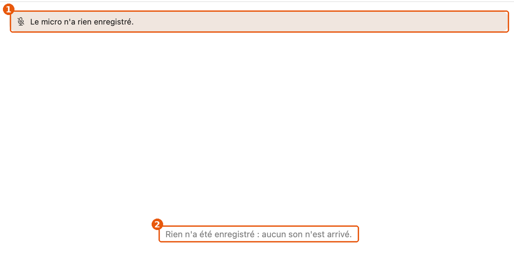
① bandeau TranscriptReader.swift:1072 ; ② centre :1441.
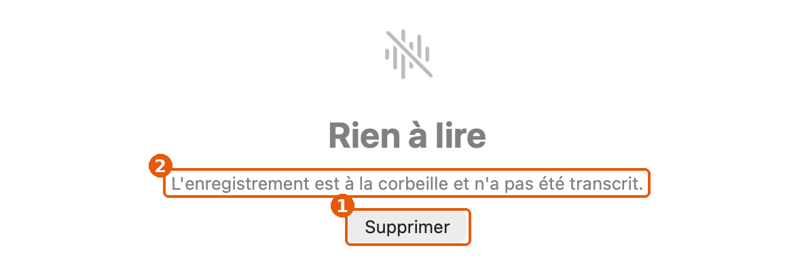
① « Supprimer » CallsWindow.swift:239 ; ② « L'enregistrement est à la corbeille et n'a pas été transcrit. » CallsWindow.swift:237, alors que TranscriptReader.swift:1443 dit « L'enregistrement est à la corbeille : plus rien à transcrire. »
Cause
Les états vides ont été écrits écran par écran (EmptyCalls, CallsWindow, TranscriptReader.firstTranscription), sans composant commun.
Impact
(a) Chaque ouverture de la fenêtre sans sélection ; premier lancement. (b) Chaque enregistrement raté (le cas où l'on a le plus besoin de comprendre). (c, d) Chaque conversation dont l'audio est parti sans transcription.
Règle
TEXTES.md, Vocabulaire (conversation ≠ appel) ; principe 1 (« on ne dit pas deux fois la même chose dans une vue ») ; Par élément : « Bouton : un verbe et son objet ». Apple, ContentUnavailableView : un symbole, un titre, une description, une action. Observé : Notes (« Aucune note » + icône de note), Mail (« Aucun message sélectionné », sans icône).
Options
A. Un seul état vide par cause, avec l'objet dans le bouton (choisie)
Icône waveform (celle de la barre des menus) ; bandeau micro gardé seulement s'il y a du texte (une piste muette sur deux) ; bouton model.deleteLabel([m]) ; une seule phrase pour « audio à la corbeille ».
B. Pas d'icône du tout, comme Mail
Pour : moins à dessiner. Contre : l'état « aucune conversation encore » du premier lancement mérite un signe.
Spécification
EmptyCalls.swift:65, :68, :76, :78 systemImage: "phone" → systemImage: "waveform"
TranscriptReader.swift:1070 if micSilent { → if micSilent && !reader.doc.lines.isEmpty {
TranscriptReader.swift:1440-1441 Text("Rien n'a été enregistré : aucun son n'est arrivé.")
→ ContentUnavailableView { Label("Rien d'enregistré", systemImage: "mic.slash") }
description: { Text(micSilent ? "Aucun son n'est arrivé du micro ni des apps." : "Aucun son n'est arrivé.") }
actions: { Button(model.deleteLabel([meta])) { … } }
CallsWindow.swift:237 "L'enregistrement est à la corbeille et n'a pas été transcrit."
→ "L'enregistrement est à la corbeille : plus rien à transcrire." (la phrase de :1443)
CallsWindow.swift:239 Button("Supprimer", role: .destructive) → Button(model.deleteLabel([m]), role: .destructive)
Critères d'acceptation
Recherche de "phone" dans EmptyCalls.swift : 0.
Un enregistrement sans aucun son : un seul message à l'écran.
Le bouton de « Rien à lire » dit « Supprimer l'appel », « Supprimer la réunion » ou « Supprimer la note ».
10. Quatorze tailles de texte, dont 27 emplois en dur, et du 10 pt pour lire
Détail1 jSens · cohérenceLot F
Symptôme
Le texte courant de l'interface est en 12 pt (.callout), les informations secondaires en 10 pt (.caption), et 27 emplois fixent une taille à la main (9, 10, 11, 12, 13, 15, 18, 20, 36, 56 pt).
DESIGN.md fixe « Interface courante : .callout » et « Information secondaire : .caption ». Les tailles en dur viennent d'icônes dimensionnées par .font(.system(size:)) (13 des 27) et de quelques textes (CallCard.swift:300 9 pt, TranscriptReader.swift:1324 13 pt…).
Impact
Toute l'app. Le 10 pt porte des informations utiles : heure d'une réplique, compteur du lecteur, durée restante (« encore 45 s »), détail de Claude. C'est le minimum de macOS, en gris secondaire : 3,9:1 au mieux (Mesures).
Règle
HIG, Typography › macOS : taille par défaut 13 pt, minimum 10 pt ; styles intégrés (body 13, callout 12, subheadline 11, caption 10). HIG, Typography : « Use font sizes that most people can read easily » et limiter le nombre de tailles. Observé : Notes et Mail écrivent le titre d'une ligne en 13 pt et ses détails en 11–12 pt ; aucune information à lire en 10 pt.
Options
A. Six rôles, aucune information à lire sous 11 pt (choisie)
Échelle : Titre de page 17 semi-gras · Titre de bloc 13 semi-gras · Lecture 14 (inchangé) · Interface 13 · Secondaire 12 · Petit 11. Les icônes gardent leur taille, mais via .imageScale ou une constante nommée.
Pour : se rapproche de macOS (13 pt) sans changer la densité de la liste (12 pt reste pour les métadonnées). Contre : les cartes de Réglages s'allongent d'environ 1 pt par ligne de détail.
B. Garder 12 / 10, remplacer seulement les tailles en dur
Pour : rien ne bouge à l'écran. Contre : le 10 pt pour lire reste.
donnees/typographie.csv régénéré : au plus 7 tailles de texte ; 0 .font(.system(size:)) hors constantes nommées dans Style.swift.
.caption et .caption2 ne portent plus de texte à lire (seulement des badges et des compteurs dans une capsule).
DESIGN.md, tableau Texte, mis à jour dans le même commit.
11. Menus : Rechercher mal rangé, ⌘L, pas d'Aide, intitulé d'annulation
Détail2 hFamiliaritéLot B
Symptôme
(a) Rechercher ⌘F, ⌥⌘F, ⌘G, ⇧⌘G sont dans Présentation. (b) La fenêtre principale se rouvre par ⌘L. (c) Pas de menu Aide, donc pas de champ de recherche des commandes. (d) « Annuler supprimer la conversation ». (e) fn D et fn S, raccourcis globaux, dans l'espace que macOS réserve à la touche Globe ; l'app appelle sa fonction « Prise de note rapide », le nom de la fonction d'Apple sous fn Q.
(a) MainMenu.swift:78-92. (b) MainMenu.swift:150, App.swift:878. (c) MainMenu.swift:143-152 : pas de NSApp.helpMenu. (d) MainMenu.swift:176-180 (titled) et les noms d'action d'annulation (CallTrash.swift:37). (e) App.swift:866,875, Onboarding.swift:402.
Impact
(a, b) Qui cherche par habitude ; (c) qui ne connaît pas l'app (le champ d'Aide trouve « Nouvelle transcription » en tapant « trans ») ; (d) chaque suppression annulée ; (e) risque qu'une version de macOS prenne fn D.
Règle
HIG, The menu bar › Edit menu : sous-menu Find (Find ⌘F, Find Next ⌘G, Find Previous ⇧⌘G, Use Selection for Find ⌘E). HIG, The menu bar › Help menu : le dernier menu, avec le champ de recherche. HIG, Keyboards : ne pas redéfinir les raccourcis du système ; la touche Globe est réservée au système. Observé : Mail et Messages rouvrent la fenêtre principale par ⌘0 ; Finder : « Annuler le déplacement ».
⌘L est arrivé avec b56f9b6 (4 novembre, la fenêtre « Appels » renommée « Conversations ») ; le commit n'explique pas le choix. fn D vient de 0286f57 (30 octobre). Ce sont des choix assumés : la reco garde fn D et fn S, et propose seulement de les doubler dans la fenêtre (⇧⌘N, problème 2) et de ne plus les appeler « note rapide ».
Spécification
MainMenu.swift:78-92 déplacer les 4 articles de « Présentation » vers « Édition », dans un sous-menu :
submenu("Rechercher", [
item("Rechercher dans les conversations", key: "f", …),
item("Rechercher dans la transcription", key: "f", modifiers: [.command, .option], …),
item("Rechercher le suivant", key: "g", …),
item("Rechercher le précédent", key: "g", modifiers: [.command, .shift], …),
])
MainMenu.swift:150, App.swift:878 key: "l" → key: "0"
MainMenu.swift:152 (après Fenêtre)
+ let help = submenu("Aide", [item("Aide de Callrecorder", key: "?") { NSWorkspace.shared.open(URL(string: "https://callrecorder…/guides")!) }])
+ menu.addItem(help); NSApp.helpMenu = help.submenu
MainMenu.swift:176-180
avant return verb + " " + action.prefix(1).lowercased() + action.dropFirst()
après return verb + " " + action // « Annuler Supprimer la conversation », comme macOS
(ou nommer les actions : CallTrash.swift:37 « la suppression », GroupUndo « le rangement »)
Onboarding.swift:402 "Prise de note rapide" → "Note dictée (fn D)"
Critères d'acceptation
Menu Édition › Rechercher contient les 4 commandes ; Présentation n'en contient plus.
Fenêtre › Conversations ⌘0.
Aide › champ de recherche : « trans » montre Conversation › Nouvelle transcription.
Après une suppression, Édition montre « Annuler Supprimer la conversation » (ou « Annuler la suppression »).
12. Notifications : une question sans boutons, neuf actions dans Options
Gêne3 hFonctionLot D
Symptôme
La notification de la semaine a pour titre « CallRecorder » et pour texte une question (« Vérifier maintenant plutôt qu'en plein appel ? ») sans bouton : cliquer vaut oui, ignorer vaut non, rien ne le dit. La notification de fin d'appel peut porter jusqu'à huit « Classer dans … » et « Supprimer ».
Preuve
Sources/CallCapture/WeeklyAccess.swift:134-136 (aucune catégorie, aucune action) ; Recorded.swift:96 (le clic = openSettings). Recorded.swift:15maxGroups = 8, :56-58 une action par groupe.
Cause
La notification hebdomadaire a été pensée comme un rappel cliquable ; celle de fin d'appel suit la liste des groupes sans filtre.
Impact
Hebdomadaire : une fois par semaine, pour chaque personne qui a donné l'accès à l'écran. Fin d'appel : après chaque appel (réglage « Notification après chaque appel » activé).
Règle
HIG, Notifications : « Avoid including your app's name or icon » (le système les affiche) ; écrire le fait ; une notification actionnable propose des actions courtes et peu nombreuses. TEXTES.md, Par élément : « Notification : le fait, puis l'action si elle est attendue ». Observé : Calendrier (« Répéter » / « Fermer »), Mail (« Répondre », « Corbeille ») : deux ou trois actions.
Spécification
WeeklyAccess.swift:135-136
avant content.title = "CallRecorder"
content.body = "macOS peut redemander l'accès à l'écran. Vérifier maintenant plutôt qu'en plein appel ?"
après content.title = "Renouveler l'accès à l'écran"
content.body = "macOS peut le redemander. Mieux vaut maintenant qu'en plein appel."
content.categoryIdentifier = "weekly"
// catégorie : [UNNotificationAction("renew", "Renouveler"), UNNotificationAction("later", "Plus tard")]
Recorded.swift:96 action "later" → reprogrammer dans 1 h ; "renew" ou clic → openSettings() (inchangé)
Recorded.swift:15 maxGroups = 8 → 3
Recorded.swift:56 let groups = Groups.load(cfg).prefix(Self.maxGroups)
→ les 3 groupes les plus employés sur 14 jours (Usage), sans celui de l'appel
Recorded.swift:57 title: "Classer dans \($0.title)" → title: $0.title
+ UNNotificationCategory(…, categorySummaryFormat/actions) : titre de menu « Classer » si l'API le permet
Critères d'acceptation
Notification hebdomadaire : titre « Renouveler l'accès à l'écran », deux boutons.
« Plus tard » : la notification revient une heure après, pas avant.
Fin d'appel : au plus 3 groupes + Supprimer dans Options.
13. Barre des menus : Quitter caché derrière un clic droit
Détail1 hFamiliaritéLot D
Symptôme
Un clic sur l'icône ouvre le panneau des conversations ; le menu (Quitter, version, mise à jour, passer à la copie de développement) n'apparaît qu'au clic droit ou ⌃-clic. Rien ne l'indique. L'app n'a pas d'icône dans le Dock.
Preuve
App.swift:926-941 (statusClicked) ; RecordingsPanel.swift:7-69 : le pied du panneau a Enregistrer une réunion et Réglages, pas de Quitter.
Cause
Le panneau (081993f, 29 octobre) a pris le clic gauche ; le menu est resté au clic droit.
Impact
Qui veut quitter l'app (avant une mise à jour, pour libérer le micro) ; elle n'a pas de Dock.
Règle
HIG, The menu bar › Menu bar extras : « Display a menu — not a popover — when people click your menu bar extra », sauf si la fonction est trop riche pour un menu. Le panneau est un choix assumé ; la règle rappelle que le menu doit rester trouvable. Observé : Dropbox, 1Password, Fantastical ouvrent un panneau et y placent un bouton ⋯ ou ⚙︎ qui donne Quitter.
Spécification
RecordingsPanel.swift:35-37 (ligne Réglages du pied)
+ à droite : Menu { …les articles de statusMenu… } label: { Image(systemName: "ellipsis.circle") }
+ .menuStyle(.borderlessButton).frame(width: 28, height: 28).accessibilityLabel("Plus")
(exposer statusMenu, App.swift:899, au modèle ; ou reconstruire les articles en SwiftUI)
Critères d'acceptation
Panneau ouvert d'un clic : ⋯ › Quitter Callrecorder existe.
Le clic droit sur l'icône montre toujours le menu.
14. La pastille ne dit pas ce qu'elle enregistre
Détail3 hFonctionLot D
Symptôme
Point rouge, chrono, Capturer, Arrêter. Rien ne dit si c'est Teams, Chrome ou la réunion en salle. Pas de clic droit ; la masquer demande d'aller dans les Réglages.
Preuve
Pastille.swift:69-91 (boutons), :164-180 (point et chrono, sans infobulle ni menu). Pastille.Actions ne porte que deux libellés : l'app ne lui passe pas le nom de ce qui enregistre.
Impact
Chaque enregistrement ; surtout quand deux visios sont ouvertes, ou qu'une réunion démarre pendant un appel.
Règle
HIG, Panels : un panneau flottant reste discret mais dit ce qu'il contrôle. HIG, Menus › Context menus : un objet manipulable offre ses actions au clic droit. Observé : le témoin d'enregistrement d'écran de macOS (barre des menus) et l'image dans l'image de FaceTime ont un clic droit.
Spécification
Pastille.swift:23-27 struct Actions { var stopName; var captureName? ; + var what: String } // « Teams », « la réunion »
App.swift:914-916 pastille.show(.init(…, what: meeting ? "la réunion" : s.meta.appLabel), …)
Pastille.swift (build) + time.toolTip = "Enregistrement de \(what) depuis \(start, HH:mm)"
+ fond.menu = NSMenu : « Ouvrir la conversation » (callsWindow.show(select:)), séparateur, « Masquer la pastille » (Pastille.shown = false)
+ libellés d'accessibilité : problème 4
Critères d'acceptation
Survol du chrono : « Enregistrement de Teams depuis 22:55 ».
Clic droit sur le fond : le menu, sans que Callrecorder passe au premier plan.
« Masquer la pastille » coche le réglage correspondant.
15. Téléphones : les réglages avant le téléphone, « Aucun téléphone branché » à côté d'un téléphone relié
Gêne4 hSensLot E
Symptôme
Sous « Téléphones reliés », quatre réglages, puis le nom du téléphone en dernier. Plus bas, « Android : Aucun téléphone branché · Branchez votre Pixel en USB » alors qu'un Pixel est relié par le Wi-Fi. « Ajouter un téléphone » [Ajouter…] répète le verbe. Les coches bleues de « Ce qui est enregistré sur Android » ont l'air de cases à cocher.
SettingsParts.swift:77-118 (PhoneLinkGroup : réglages :79-112, puis ForEach des téléphones :114-118). Onboarding.swift:595-596 : la ligne USB parle de « téléphone branché » sans préciser. AddPhone.swift:180-186. Wizard.swift:163 (« votre Pixel »).
Impact
Chaque personne qui relie un Android ; au deuxième téléphone, les réglages deviennent ambigus.
Règle
HIG, Settings : regrouper par objet, du général au particulier. HIG, Toggles / Checkboxes : une coche dans une liste de réglages est un contrôle ; un état s'écrit. Observé : Réglages Système › Bluetooth : l'appareil en tête de sa ligne, ⓘ pour ses réglages ; « Ajouter… » une seule fois. TEXTES.md : pas de forme « État : explication ».
Depuis 0.24.0, le code de recos-design a renommé « Quand le téléphone enregistre seul » en « Enregistrement » (SettingsParts.swift:79, décision de Gildas du 6 novembre) : la reco s'appuie sur ce nouveau libellé.
Spécification
SettingsParts.swift:77-118 un SettingsGroup par téléphone relié :
SettingsGroup(name) { // « Google Pixel 7 »
SettingsRow(PhoneLink.statusNote(id) …) // « Relié par le Wi-Fi · vu à 22:29 », ⋯ › Retirer…
SettingsRow("Enregistrement", …) // Manuel / Événements du calendrier / Tout le temps
SettingsRow("Enregistrer les appels du téléphone", …)
SettingsRow("Le Mac enregistre aussi", …)
SettingsRow("Capter les appels par le Wi-Fi", …)
}
(si un réglage vaut pour tous les téléphones, le dire dans le pied : « Pour tous les téléphones reliés »)
Onboarding.swift:596 "Aucun téléphone branché" → "Aucun téléphone branché en USB"
Wizard.swift:163 "Branchez votre Pixel en USB, avec le débogage USB activé" → "Branchez le téléphone en USB, débogage USB activé"
Onboarding.swift:595 footer "Bêta : seul le Pixel 7 …" → "Essayé seulement sur un Pixel 7 sous Android 17. Ailleurs, vérifiez le premier appel enregistré."
AddPhone.swift:180-186 SettingsRow("Ajouter un téléphone") { Button("Ajouter…") } → Button("Ajouter un téléphone…") seul, sous la liste
Onboarding.swift:615, :618 (coches « Ce qui est enregistré ») → Text("Enregistré").foregroundStyle(.secondary)
Critères d'acceptation
Deux téléphones reliés (démo PhoneLink.pretend) : chacun son groupe, son nom en tête.
Un Pixel relié par le Wi-Fi, rien en USB : la ligne dit « Aucun téléphone branché en USB ».
Aucune coche bleue non cliquable dans les Réglages.
16. Agents : un bouton et un interrupteur sur la même ligne
Gêne3 hSensLot E
Symptôme
« Accès des agents à vos conversations » porte « Relier Codex » (ou « Relier Claude Desktop ») et un interrupteur. Le détail mêle quatre choses : qui est relié, ce qu'ils peuvent faire, où partent les données, la relance de Claude Desktop. « Copier la configuration MCP » emploie un mot du code.
Preuve
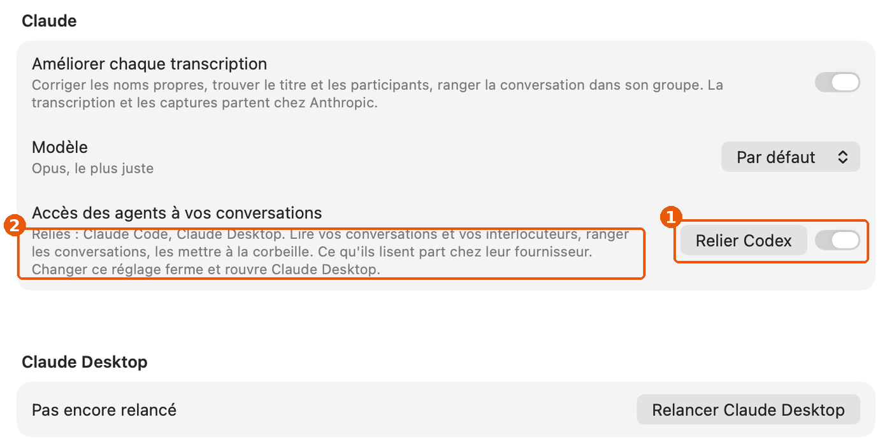
① bouton + interrupteur ; ② quatre informations en trois lignes ; ③ « MCP ».
Cause
Onboarding.swift:758-768 : un SettingsRow dont l'accessoire contient Button("Relier " + missing…) (:767) et toggle(…) (:768). :795-796 les boutons de copie.
Impact
Chaque installation, chaque nouvel agent. L'interrupteur décide de ce qui part chez un fournisseur : son effet doit être sans ambiguïté.
Règle
HIG, Toggles : un interrupteur contrôle un seul réglage, décrit par son libellé. HIG, Settings. Observé : Réglages Système › Confidentialité et sécurité › Accessibilité : une ligne par app, un interrupteur chacune ; Comptes Internet : une ligne par compte, son état à droite. TEXTES.md, principe 3.
Spécification
Onboarding.swift:758-768
SettingsRow("Accès des agents à vos conversations",
detail: "Ce qu'ils lisent part chez leur fournisseur.") { toggle(…) } // seul
ForEach(agents trouvés sur ce Mac) { a in
SettingsRow(a.name) { a.linked ? Text("Relié").foregroundStyle(.secondary) : Button("Relier") { … } }
}
// « Changer ce réglage ferme et rouvre Claude Desktop » : dit dans l'alerte qui précède la relance, pas d'avance
Onboarding.swift:796 "Copier la configuration MCP" → "Copier la configuration"
Critères d'acceptation
Aucune ligne de Réglages ne porte à la fois un bouton et un interrupteur (recherche manuelle sur les 13 captures de Réglages refaites).
Chaque agent installé a sa ligne et son état.
17. Réglages en page pleine, Groupes à droite : deux navigations
Détail1 jFamiliaritéLot G
Symptôme
⌘, remplace toute la fenêtre par une liste centrée avec ‹ ; Groupes, ouvert depuis cette liste, revient à deux colonnes avec son propre ‹. On descend sur deux niveaux (Réglages › Intégrations › Agents) par chevrons, à la façon d'un iPhone.
Preuve
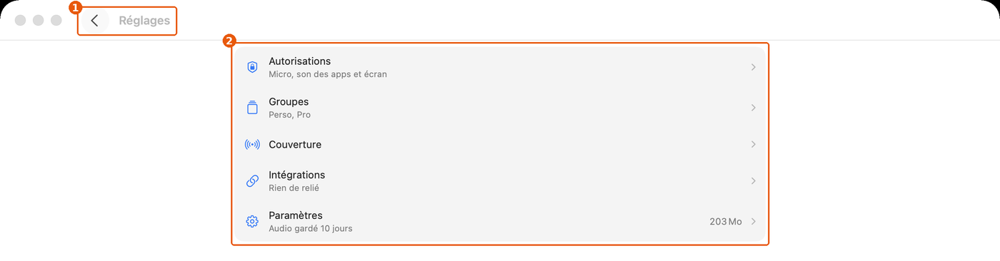
① retour, ② liste centrée, colonne masquée.
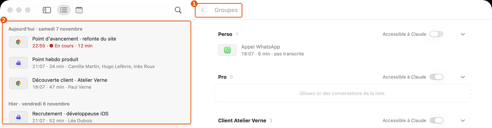
① « Groupes » à droite, ② la colonne des conversations reste.
Cause
Wizard.swift:60-70 (parent : arbre à deux niveaux) ; Onboarding.swift:168-213 (accueil) ; les Groupes s'ouvrent par w.openGroups dans le panneau de la fenêtre Conversations.
Impact
Chaque visite des Réglages : on ne voit pas où l'on est, on revient en arrière pour changer de rubrique.
Règle
HIG, Settings (macOS) : rubriques visibles, navigation latérale. Observé : Réglages Système (macOS 13 et suivants) : rubriques dans la barre latérale, page à droite, sans retour ; Mail et Notes : onglets en haut de leur fenêtre de réglages.
Les Réglages dans la fenêtre, sans fenêtre à part, sont un choix de 9c489e0 (27 octobre) ; l'accueil à six entrées de f4a32e1 (2 novembre). La reco garde les deux : elle change ce que montre la colonne pendant que les Réglages sont ouverts.
Options
A. La colonne devient la liste des rubriques (choisie)
Pour : la disposition de Réglages Système ; Groupes devient une rubrique ; Échap revient aux conversations. Contre : une journée de travail ; les sous-pages (Apps et sites, Téléphones) gardent un niveau.
B. Fenêtre de Réglages à part, à onglets
Pour : le standard HIG. Contre : revient sur 9c489e0, sans demande de Gildas.
C. Garder, mais Groupes en page pleine comme le reste
Pour : une heure. Contre : la colonne sert au glisser-déposer vers un groupe (CallCard.swift:160) : on la perdrait.
Critères d'acceptation
⌘, : la colonne liste les rubriques, la première choisie ; un clic change de page sans retour.
Échap ou ⌘0 : retour aux conversations, à la sélection d'avant.
Glisser une conversation vers un groupe reste possible (depuis la liste, page Groupes ouverte à droite).
18. Autorisations : deux procédures pour l'écran, un lien dans un titre, des dates en chiffres
Détail2 hSens · familiaritéLot E
Symptôme
La ligne Écran dit « Dans Réglages Système, activez CallRecorder, puis « Quitter et rouvrir » » et propose à droite « Relancer Callrecorder » : deux procédures, deux graphies du nom. Le groupe « Chaque semaine » porte un lien bleu « Changer… » dans son titre. « Du 03/11 au 10/11 » écrit les dates en chiffres, quand le reste de l'app écrit « samedi 7 novembre ».
Preuve
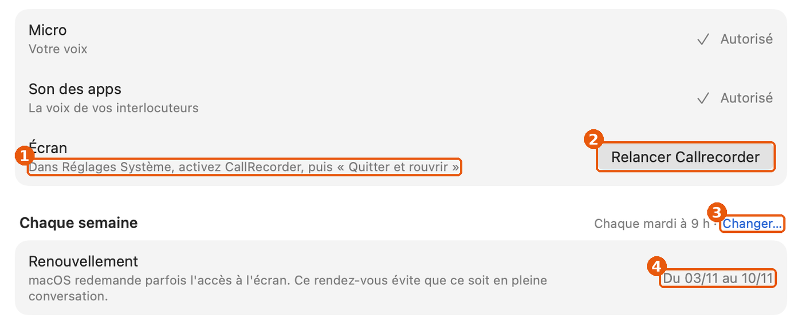
① la consigne, ② le bouton, ③ le lien dans le titre, ④ les dates.
Cause
Onboarding.swift:652 (consigne), :309 (bouton), :659-663 (Button("Changer…") dans l'en-tête, rendu en lien), Sources/CallCapture/WeeklyAccess.swift:97-104 (dateFormat = "dd/MM").
Impact
À l'installation et chaque semaine pour qui renouvelle l'accès à l'écran.
Règle
TEXTES.md principe 8 et « Instruction de parcours : une action par ligne ». HIG, Settings : les réglages se changent dans la ligne (menu local), pas par un lien. Observé : Réglages Système › Général › Mise à jour de logiciels : « Mises à jour automatiques ⓘ » dans la ligne ; dates en toutes lettres dans Calendrier et Mail.
Spécification
Onboarding.swift:652 "Dans Réglages Système, activez CallRecorder, puis « Quitter et rouvrir »"
→ "Activez « CallRecorder » dans Réglages Système."
Onboarding.swift:309 le bouton suit l'état : "Ouvrir Réglages Système" tant que l'accès n'est pas donné, puis "Relancer Callrecorder"
Onboarding.swift:659-663 retirer l'accessoire de l'en-tête ; dans le groupe :
+ SettingsRow("Moment") { Picker("", selection: $slot) { …« Mardi à 9 h »… }.labelsHidden().fixedSize() }
WeeklyAccess.swift:99 f.dateFormat = "dd/MM" → f.locale = fr_FR ; f.dateFormat = "EEEE d MMMM"
WeeklyAccess.swift:103 "Du \(…) au \(…)" → "Fait \(from) · prochain \(to)" // « Fait mardi 3 novembre · prochain mardi 10 novembre »
Critères d'acceptation
La ligne Écran n'a qu'une consigne et un bouton qui disent la même étape.
Aucun lien bleu dans un titre de groupe des Réglages.
Aucune date « jj/mm » visible (recherche de "dd/MM" dans Sources/ : 0 hors export).
19. « Arrêter » a quatre formulations
Détail30 minFamiliaritéLot B
Symptôme
La même action se lit « Arrêter » (menu de l'icône, carte d'enregistrement), « Arrêter l'enregistrement » (colonne, pastille), « Arrêter la réunion » et « Arrêter l'enregistrement de l'appel Teams » (infobulles).
TEXTES.md, principe 8. Observé : QuickTime Player et Dictaphone : « Arrêter l'enregistrement ».
Spécification
App.swift:861 "Arrêter" → "Arrêter l'enregistrement" (voir aussi problème 2)
TranscriptReader.swift:1800 Button("Arrêter", action: stop) → Button("Arrêter l'enregistrement", action: stop)
RecordingsPanel.swift:21-22 infobulle → "Arrêter l'enregistrement de \(r.meeting ? "la réunion" : r.label)"
Critères d'acceptation
outils/vocabulaire.py : « Arrêter (seul) » = 0.
20. Neuf messages d'erreur recopient le texte du système
Détail3 hSensLot C
Symptôme
Quand une opération sur un fichier échoue, l'alerte affiche error.localizedDescription : un texte de Foundation, souvent technique (« The file “meta.json” couldn't be saved because… »), parfois en anglais selon la langue du système.
Preuve
9 lieux, dont 7 en prod : CallWindow.swift:109, CallsModel.swift:616, PassagesReader.swift:90, TranscriptReader.swift:265, :365, Wizard.swift:344, :498 ; derrière un interrupteur : ExportPage.swift:36, SignalsView.swift:48.
Cause
Problem(title:message:) (Accessibility.swift:20-28) prend le message tel quel.
Impact
Rare, mais au moment où la personne a besoin de savoir quoi faire.
Règle
HIG, Alerts : un message clair, sans jargon, qui dit quoi faire. TEXTES.md, Par élément : « Erreur : ce qui s'est passé, puis quoi faire, sans code ni nom technique ». Observé : Finder (« Vous ne disposez pas des autorisations nécessaires »), Notes.
Spécification
Accessibility.swift (nouveau) + extension Problem { static func file(_ title: String, _ error: Error) -> Problem }
// CocoaError.fileWriteOutOfSpace → "Le disque est plein. Libérez de la place, puis réessayez."
// .fileWriteNoPermission / .fileReadNoPermission → "Callrecorder n'a pas accès à ce dossier."
// .fileNoSuchFile / .fileReadNoSuchFile → "Le fichier a été déplacé ou supprimé."
// autre → "Réessayez. Si cela recommence, le détail est dans le journal." + Log.write(error)
Les 9 lieux : Problem(title: …, message: error.localizedDescription) → Problem.file(…, error)
Critères d'acceptation
Recherche de localizedDescription dans les vues : seulement dans Log.write et Problem.file.
Essai sur un dossier en lecture seule : le message est en français, sans nom de fichier technique.
21. Deux symboles pour Copier, trois pour « ouvrir ailleurs »
Détail30 minFamiliaritéLot F
Symptôme
Copier s'illustre par clipboard (9 emplois) et par doc.on.doc (1). « Ouvrir ailleurs » : arrow.up.right (3), arrow.up.right.square (1), arrow.up.forward.app (1).
HIG, SF Symbols : employer le même symbole pour la même action, et les symboles que le système emploie pour ses actions standard. macOS 26 illustre Copier par doc.on.doc dans les menus Édition des apps d'Apple (Notes, TextEdit).
Spécification
Les 9 lieux "clipboard" → "doc.on.doc"
Ouvrir dans une autre app : "arrow.up.forward.app" partout (TranscriptReader.swift:1423 garde le seul cas « dans le navigateur » : "safari" si c'est une page)
CallFacts.swift:214, JournalPane.swift:442,579 (aller à un autre endroit de l'app) : "arrow.right.circle"
Critères d'acceptation
donnees/icones.csv régénéré : clipboard 0.
22. Ligne de liste : vignette vide, « pas transcrite », infobulles qui dictent un chemin
Détail2 hSensLot C
Symptôme
Sans capture, la vignette est un cadre gris avec un logo de 14 pt au centre : l'air d'une image qui n'a pas chargé. Les lignes avec capture mettent le logo en badge : deux grammaires dans une liste. « Appel WhatsApp · pas transcrite » : l'accord se fait avec un mot absent. L'infobulle dit « Pour la transcrire : l'ouvrir, puis menu Conversation › Transcrire. ».
Preuve
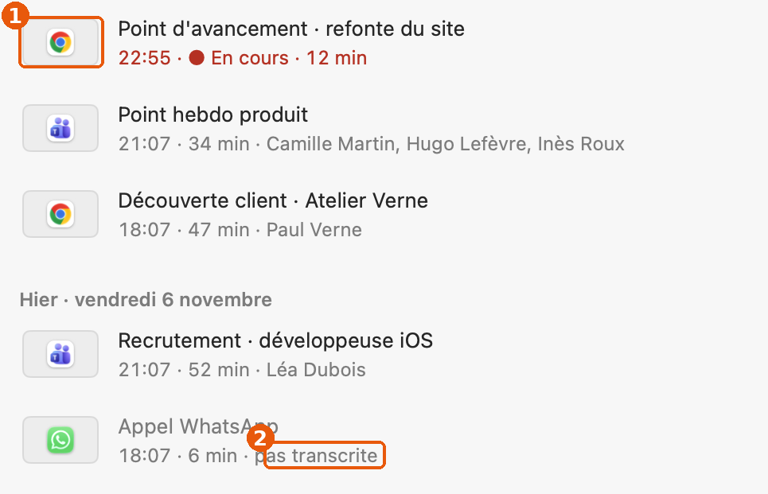
① vignette sans capture ; ② « pas transcrite ».
Cause
CallCard.swift:337-358 (RowThumb, Thumb.fill) ; :228-231 (« pas transcrite » et son infobulle) ; :226 (« Pas transcrite : … ») ; :222 (« Pour la garder ici : clic droit, puis Garder dans la liste. »).
Règle
TEXTES.md principe 2 (un texte qui explique avoue une interface ratée) ; « État, badge : un mot ou deux, vrais à cet instant ». Observé : Finder en liste : l'icône de l'app quand il n'y a pas d'aperçu, jamais un cadre vide.
Thumb.fill est une valeur notée dans DESIGN.md (« Vignette sans capture ») depuis 0286f57 (30 octobre, « vignettes sans capture »). La reco la garde pour la bande de la visionneuse et la retire de la ligne de liste.
Spécification
CallCard.swift:337-358 sans capture : pas de fond ni de liseré ; logo de l'app 24 pt centré dans 48×30
CallCard.swift:228 " · pas transcrite" → " · à transcrire"
CallCard.swift:230-231 .help("Pas transcrite" + …"Pour la transcrire : l'ouvrir, puis menu Conversation › Transcrire.")
→ .help(model.audioDue(m).map { "L'audio part à la corbeille " + Dates.left($0) } ?? "")
CallCard.swift:222 .help(… + ". Pour la garder ici : clic droit, puis Garder dans la liste.") → .help(Self.aside(…))
Critères d'acceptation
Capture vide refaite : les lignes sans capture montrent un logo sans cadre, aligné avec les autres.
Aucune infobulle ne contient « clic droit » ni « menu … › ».
23. Lecteur : la coupure d'une piste ne se voit pas
Détail2 hSensLot A
Symptôme
Devant « Moi » et « Interlocuteurs », un haut-parleur coloré : c'est un bouton qui coupe la piste, il a l'air d'un témoin. Cible 22×22. Le compteur « 00:00 / 34:00 » met un zéro de tête.
Preuve
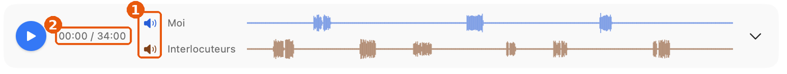
① les haut-parleurs ; ② le compteur.
Cause
TranscriptReader.swift:531-547 (bouton .hoverCircle 22×22, le nom à côté n'est pas cliquable) ; :470-472 (short retire « 00: » des heures, pas le zéro des minutes).
Règle
HIG, Buttons : un bouton doit avoir l'air d'un bouton (forme, survol, état). Observé : QuickTime Player et Dictaphone écrivent « 0:00 ». GarageBand et Logic : la coupure d'une piste est un bouton à état visible (M).
Spécification
TranscriptReader.swift:531-547 le bouton englobe icône + nom : Button { … } label: { HStack { Image; Text(name) } }
.frame(minWidth: 28, minHeight: 24) ; coupé : nom barré (.strikethrough()) et .secondary
TranscriptReader.swift:470-472 short(t) = t < 3600 ? String(format: "%d:%02d", m, s) : String(format: "%d:%02d:%02d", h, m, s)
Critères d'acceptation
Cliquer le nom « Interlocuteurs » coupe la piste ; état visible sans survol.
Compteur « 0:00 / 34:00 ».
24. La pile de notes ressemble à l'icône de Calendrier
Détail1 hSensLot C
Symptôme
En haut à droite d'une conversation, une feuille lignée avec « 3 » dessus : on lit un jour du calendrier.
Preuve
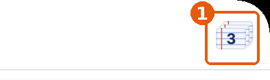
① lecture.webp, repliee.webp, calendrier.webp.
Cause
TranscriptReader.swift:1978-2000 (NotesPile, dessin propre), appelé :561-568.
Règle
HIG, SF Symbols et Icons : ne pas imiter l'icône d'une app d'Apple. Le chiffre posé sur une feuille est la signature de Calendrier.
Spécification
TranscriptReader.swift:561-568 NotesPile(count:) → Label("\(noteCount)", systemImage: "note.text").labelStyle(.titleAndIcon)
dans la capsule des boutons ronds (BarIconSize.round de haut)
Critères d'acceptation
Le bouton montre note.text et le nombre à côté ; libellé VoiceOver inchangé (« 3 notes »).
25. Notes : un bouton flottant, et l'heure la moins utile en tête
Détail2 hFamiliaritéLot C
Symptôme
Un rond de 46 pt avec « + » flotte dans le coin. Chaque carte commence par l'heure de prise de note en gras (« 22:36 »), puis la citation, puis l'origine et l'heure dans l'appel (« 00:08 »).
Preuve
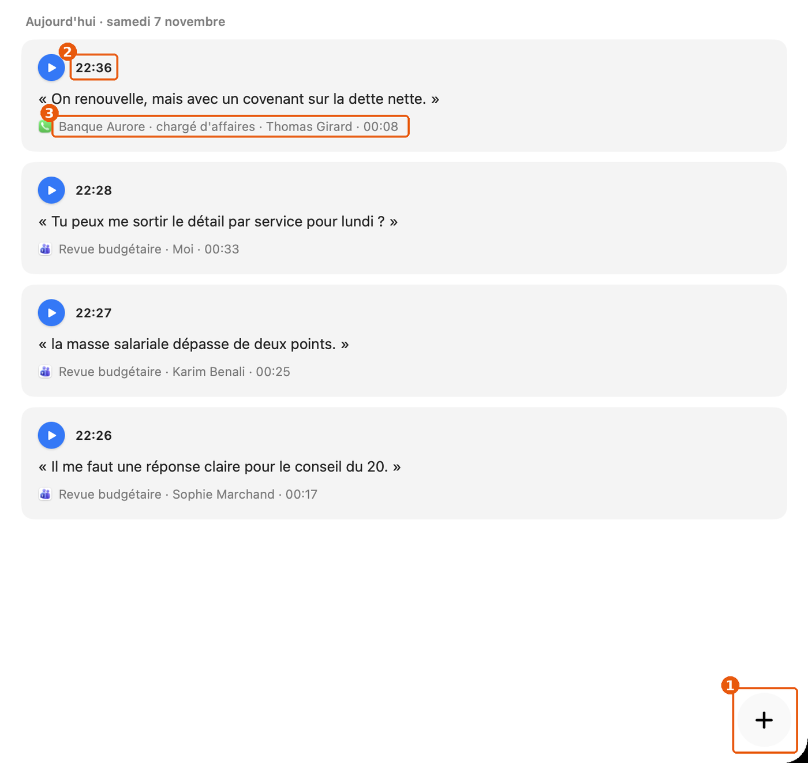
① le « + » ; ② l'heure de prise de note ; ③ l'origine.
Material Design 3, FAB : composant propre à Android. HIG, Toolbars : l'action de création d'une vue va dans sa barre d'outils. Observé : Notes (bouton square.and.pencil dans la barre, ⌘N) ; Rappels (« + » dans la barre).
Spécification
NotesPane.swift:386-420 NewNoteButton retiré du coin ; dans windowBar(… trailing:) :
Button { model.startNote() } label: { Image(systemName: "square.and.pencil") }
.help("Nouvelle note (⇧⌘N)").accessibilityLabel("Nouvelle note") (raccourci : problème 2)
NotesPane.swift:223-260 ordre : citation (Reading.font) · origine « Revue budgétaire · Karim Benali · 00:25 » (.callout, .secondary)
· heure de prise en .caption .secondary, alignée à droite
Critères d'acceptation
Page Notes : plus de bouton flottant ; « Nouvelle note » dans la barre, avec son infobulle.
La citation est le premier texte de chaque carte.
26. Visionneuse : trois vignettes à « 15:48 »
Détail30 minFonctionLot C
Symptôme
Les vignettes portent l'heure de l'horloge, identique pour trois captures prises dans la même minute ; le sous-titre aussi. La réplique sous l'image porte l'heure dans l'appel (« 00:03 »).
Preuve
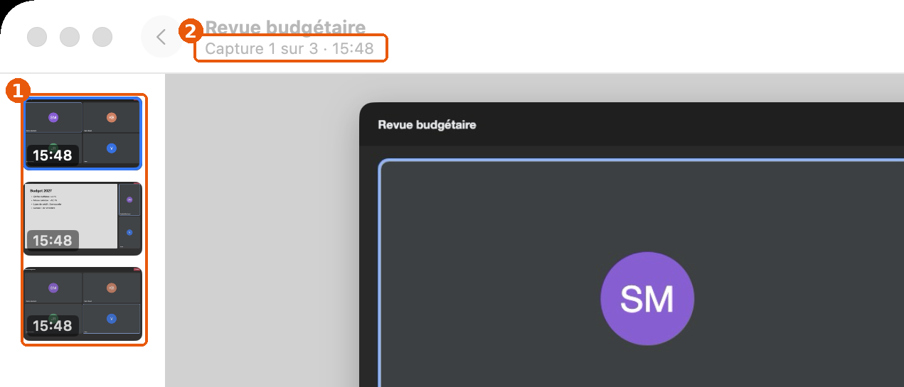
① trois « 15:48 » ; ② « Capture 1 sur 3 · 15:48 ».
Cause
CaptureViewer.swift:168, :182 : CaptureViewer.clock (HH:mm) sur shot.at.
Règle
Une étiquette doit distinguer ce qu'elle étiquette. Observé : QuickTime Player, Photos (vidéo) : position dans le média.
Spécification
CaptureViewer.swift:168, :182 CaptureViewer.clock.string(from: shot.at) → CLI.clock(shot.at.timeIntervalSince(meta.start)) au format court (problème 23)
Critères d'acceptation
Trois captures dans la même minute portent trois heures différentes.
27. Le calendrier se lit à rebours
Détail3 hFamiliaritéLot G
Symptôme
Novembre est au-dessus d'octobre ; les initiales des jours restent figées au-dessus des deux mois. Les jours avec conversations sont en gras et pointés, les autres en gris.
Preuve
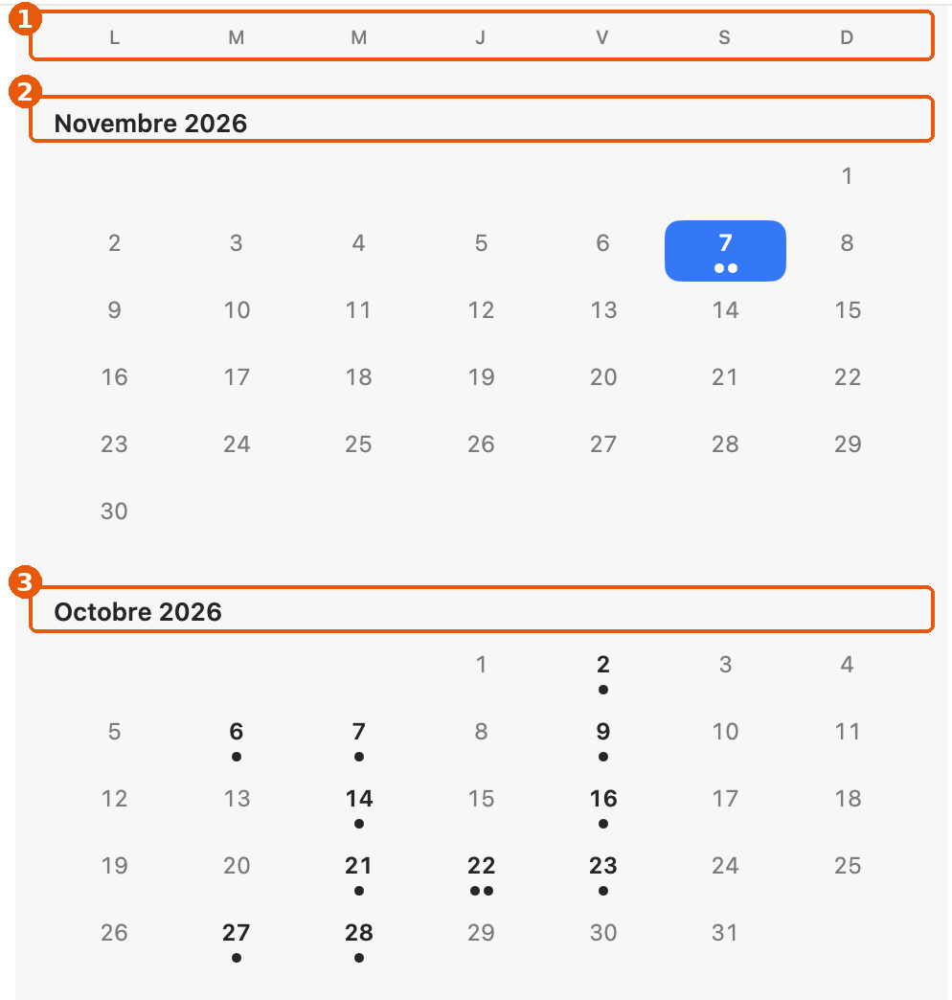
① initiales figées ; ② novembre ; ③ octobre, en dessous.
Cause
DotCalendar.swift:28-36, commentaire : « Le mois en cours en haut, comme la liste des appels : du plus récent au plus ancien ».
Règle
Observé : Calendrier (vue Année, mini-calendrier), Photos (Jours) : le temps descend, le présent en bas ou sous des flèches ‹ ›.
L'ordre est voulu (commentaire de DotCalendar.swift:29, depuis c037d1a, 22 octobre) : il aligne le calendrier sur la liste. À trancher par Gildas : un calendrier est une grille, la liste une file.
Options
A. Chronologique, défilé jusqu'au mois courant en bas ; initiales sous chaque mois
B. Un seul mois et des flèches ‹ › (mini-calendrier de Calendrier)
Pour : compact. Contre : on perd la vue d'ensemble des points.
Critères d'acceptation
À l'ouverture, le mois courant est visible, en bas ; on remonte vers le passé.
28. 87 espacements, 63 opacités, 26 rayons écrits en dur
Détail2 jCohérenceLot F
Symptôme
Des écarts d'un ou deux points d'un bloc à l'autre ; des fonds à 0,09, 0,14, 0,15, 0,16 à côté des jetons 0,08 et 0,12.
Preuve
donnees/ecarts.csv : 87 espacements hors de l'échelle 4–24 de DESIGN.md (23 % des 379 nombres), dont 2 ×24, 3 ×18, 5 ×9, 7 ×5, 14 ×13 ; 63 opacités en nombre (24 valeurs) ; 26 rayons en nombre (2 ; 2,5 ; 3 ; 4 ; 6 ; 8 ; 9 ; 10 ; 12).
Cause
DESIGN.md, Écarts connus : « on les corrige en retouchant chaque vue ». Le relevé donne la liste fichier par fichier.